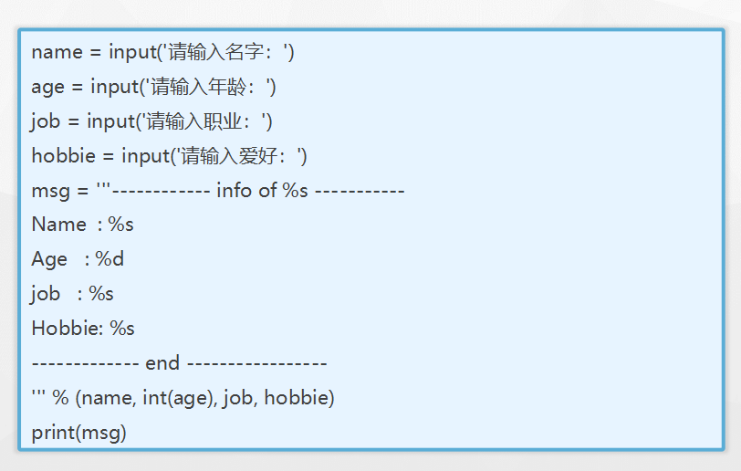
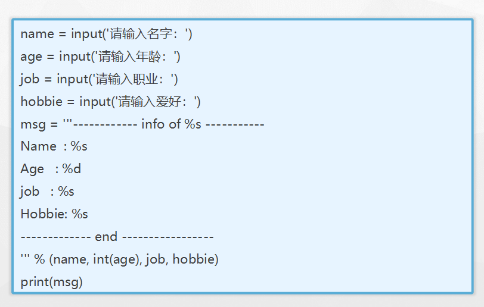

字符串
python中字符串的格式
如下定义的变量a，存储的是数字类型的值
a =
100
如下定义的变量b，存储的是字符串类型的值
b =
"hello itcast.cn"
或者
b =
'hello itcast.cn'
小总结：
- 双引号或者单引号中的数据，就是字符串
Python 访问字符串中的值
Python 不支持单字符类型，单字符在 Python 中也是作为一个字符串使用。
Python 访问子字符串，可以使用方括号来截取字符串，如下实例：
var1 = 'Hello World!'
var2 = "Runoob"
print ("var1[0]: ", var1[0])
print ("var2[1:5]: ", var2[1:5])

a = "Hello"
b = "Python"
print("a + b 输出结果：", a + b)
print("a * 2 输出结果：", a * 2)
print("a[1] 输出结果：", a[1])
print("a[1:4] 输出结果：", a[1:4])
if( "H" in a) :
print("H 在变量 a 中")
else :
print("H 不在变量 a 中")
if( "M" not in a) :
print("M 不在变量 a 中")
else :
print("M 在变量 a 中")
print (r'\n')
print (R'\n')
输出结果为：
a + b 输出结果： HelloPython
a * 2 输出结果： HelloHello
a[1] 输出结果： e
a[1:4] 输出结果： ell
H 在变量 a 中
M 不在变量 a 中
\n
\n
Python三引号
python三引号允许一个字符串跨多行，字符串中可以包含换行符、制表符以及其他特殊字符
para_str = """这是一个多行字符串的实例
多行字符串可以使用制表符
TAB ( \t )。
也可以使用换行符 [ \n ]。
"""
print (para_str)
输入结果为：
这是一个多行字符串的实例
多行字符串可以使用制表符
TAB ( )。
也可以使用换行符 [
]。
三引号让程序员从引号和特殊字符串的泥潭里面解脱出来，自始至终保持一小块字符串的格式是所谓的WYSIWYG（所见即所得）格式的。
一个典型的用例是，当你需要一块HTML或者SQL时，这时用字符串组合，特殊字符串转义将会非常的繁琐。
errHTML = '''
<HTML><HEAD><TITLE>
Friends CGI Demo</TITLE></HEAD>
<BODY><H3>ERROR</H3>
<B>%s</B><P>
<FORM><INPUT TYPE=button VALUE=Back
ONCLICK="window.history.back()"></FORM>
</BODY></HTML>
'''
cursor.execute('''
CREATE TABLE users (
login VARCHAR(8),
uid INTEGER,
prid INTEGER)
''')
切片
切片是指对操作的对象截取其中一部分的操作。字符串、列表、元组都支持切片操作。
切片的语法：[起始:结束:步长]
注意：选取的区间属于左闭右开型，即从"起始"位开始，到"结束"位的前一位结束（不包含结束位本身)。
我们以字符串为例讲解。
如果取出一部分，则可以在中括号[]中，使用:
name =
'abcdef'
print(name[
0
:
3
])
# 取 下标0~2 的字符
a = 'abcd'
"""
a b c d
0 1 2 3
-4 -3 -2 -1
"""
print(a[-2::-2])


字符串的操作
# name = input('请输入名字:')
# age = int(input('请输入年龄: '))
# # print('名字： %s, 年龄：%d ' % (name, age)) # %格式化
# print('名字：{1}， 年龄：{1}'.format(name, age))
'成龙在拍成龙历险记'
# name = '成龙'
# print('{0}在拍{0}历险记'.format(name)) # 方法格式化
# s1 = ' a bc '
# print(s1.strip()) # 去前后空格
In [34]: s = '------abc+++++++'
In [35]: s.strip('-+')
Out[35]: 'abc'
# s2 = 'abc'
# print(s2.replace('b','a')) # 替换
# s3 = 'abca'
# print(s3.find('a')) # 找‘a'出现的下标
# print(s3.index('a')) # 找'a'出现的下标
# print(s3.count('a')) # 数‘a’的个数
s4 = 'acccabccccabcd'
print(s4.split('b')) # ['accca', 'cccca', 'cd'] # 以‘b’切分字符串
s5 = '23'
print(s5.isdigit()) # 是否是数字字符串True
s6 = 'abc'
print(s6.isalpha()) # 是否是英文True
print(s6.islower()) # 是否是全小写True
print(s6.isupper()) # 是否是全大写False
print(s6.upper()) # 转为大写ABC
print(s6.lower()) # 转为小写abc
print(s6.title()) # 首字母大写Abc
s7 = 'abAB'
print(s7.swapcase()) # 大小写转换ABab
s8 = ' abc '
print(s8.lstrip()) # 去掉左空
print(s8.rstrip()) # 去掉右空
print('*'.join('abc')) # 插入a*b*c以什么连接
-----
''.join(['abc',123,456])会报错
TypeError: sequence item 1: expected str instance, int found
这个时候该怎么办
In [12]: ''.join([str(x) for x in l])
Out[12]: 'abc123456qwe'
In [13]: ''.join(str(x) for x in l)
Out[13]: 'abc123456qwe'
-------------------------
In [38]: s = '\tabc\t123\tqwe'
In [39]: s.replace('\t','')
Out[39]: 'abc123qwe'
In [40]: s = '\tabc\t123\tqwe\r'
In [43]: re.sub('[\t\r]','',s)
Out[43]: 'abc123qwe'
In [46]: s = 'abc12302423xyz'
In [49]: str.maketrans('abcxyz','xyzabc')#制作翻译表
Out[49]: {97: 120, 98: 121, 99: 122, 120: 97, 121: 98, 122: 99}
In [50]: s.translate(str.maketrans('abcxyz','xyzabc'))
Out[50]: 'xyz12302423abc'
-------------------------------
In [15]: s = 'abc'
In [16]: s.ljust(20)
Out[16]: 'abc '
In [17]: s.rjust(20)
Out[17]: ' abc'
In [18]: s.rjust(20,'=')
Out[18]: '=================abc'
In [19]: s.just(20,'=')
n [20]: s.center(20,'=')
Out[20]: '========abc========='
In [22]: format(s, '>20')
Out[22]: ' abc'
In [23]: format(s, '<20')
Out[23]: 'abc '
In [24]: format(s, '^20')
Out[24]: ' abc '
-------------------------------
让字典格式输出
d = {'张三':200,'爱因斯坦':198,'巴顿':160,'李奇微':150}
In [27]: d.keys()
Out[27]: dict_keys(['李奇微', '巴顿', '张三', '爱因斯坦'])
In [28]: map(len,d.keys())
Out[28]: <map at 0x7f080072b390>
In [29]: max(map(len,d.keys()))
Out[29]: 4
In [30]: w = max(map(len,d.keys()))
In [32]: for k in d:
print(k.ljust(w),':',d[k])
....:
李奇微 : 150
巴顿 : 160
张三 : 200
爱因斯坦 : 198
------------------------------
s = '123asqwerAAAA'
dnum = 0 # 记录数字个数
anum = 0 # 记录小写字母个数
Anum = 0 # 记录大写字母格式
enum = 0 # 记录其他字符个数
for i in s: # 遍历整个字符串
if i.isdigit(): # 判断是否是数字
dnum += 1
elif i.islower(): # 判断是否是小写字母
anum += 1
elif i.isupper(): # 判断是否是大写字母
Anum += 1
else: # 其他情况字符
enum += 1
print('数字：{}，小写：{}，大写：{}'.format(dnum, anum,Anum))
------------------------------
import string
import random
d = string.digits # 生成0123456789字符串
a = string.ascii_letters # 生成26个大小写字母
s = ''
for i in range(20):
n = random.choice(a+d)
s += n
ds = '' # 定义数字字符串
da = '' # 定义小写字符串
dA = '' # 定义大写字符串
for j in s:
if j.isdigit(): # 是数字字符串
ds += j
elif j.isupper(): # 是大写字符串
dA += j
elif j.islower(): # 是小写字符串
da += j
print('数字{}个数{}， 大写字母{}个数{}，小写字母{}个数{}'.format(ds,len(ds), dA, len(dA), da, len(da)))
-------------------------------------
验证码
import string
import random
d = string.digits # 生成0123456789字符串
print(d, type(d))
a = string.ascii_letters # 生成26个大小写字母
print(a)
ad = a + d # 把字符串拼接
s = '' # 存储验证码
for i in range(6):
n = random.choice(ad) # 随机出一个字符串
s += n # 字符串拼接
print(s) # 打印最后验证码
回文数
回文数定义即为数字翻转后仍为原来的数字，那么这个数字就是回文数。
思路就是判断对称的数字是否相等。
num = int(input('请输入一个数：'))
bai = num // 100 # 获取百位121 // 100 = 1
shi = num % 100 // 10 # 获取十位121 %100 = 21 21 // 10 = 2
ge = num % 10 # 获取个位 121 % 10 =1
n = ge * 100 + shi*10 + bai # 合并成新数字
if n == num: # 判断是否相等
print('{}是回文数'.format(num))
else:
print('{}不是回文数'.format(num))
-------------------------------
a = input("请输入数字: ")
b=len(a)
for i in range (b):
if(a[i]==a[b-i-1]):
c=1
else:
c=0
if(c==1):
print("这是回文数")
else:
print("这不是回文数")

 
